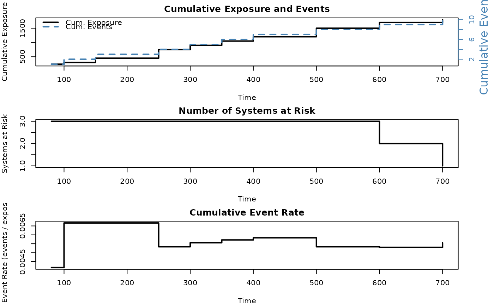

Computes exposure (total operating time at risk) across one or more repairable systems as a function of time. Exposure is defined as the total accumulated observation time summed across all systems still under observation. The function also computes the number of systems at risk and the event rate (events per unit exposure) at each event time.
Arguments
- id
A vector of system/unit identifiers. Each unique value represents a distinct system.
- time
A numeric vector of event or censoring times. Must be positive and finite.
- event
An optional numeric vector of event indicators: 1 for an event, 0 for censoring (end of observation). If
NULL(default), all observations are treated as events, and the maximum time per system is treated as the end of observation.- data
An optional data frame containing columns named
id,time, and optionallyevent.
Value
An object of class exposure containing:
- time
Sorted unique event times (excluding censoring-only times).
- n_at_risk
Number of systems under observation at each event time.
- cum_exposure
Cumulative total exposure (system-time) up to each event time.
- cum_events
Cumulative number of events up to each event time.
- event_rate
Cumulative event rate (cum_events / cum_exposure) at each event time.
- total_exposure
Total exposure across all systems and the full observation period.
- total_events
Total number of events.
- n_systems
Number of distinct systems.
- end_times
Named numeric vector of end-of-observation times per system. Can be passed directly to
mcf(end_time = ...)to ensure the MCF properly accounts for system exposure.
Details
Exposure is the total amount of operating time during which events can occur. For a fleet of \(k\) systems observed up to times \(T_1, T_2, \ldots, T_k\), the total exposure is \(E = \sum_{i=1}^{k} T_i\).
The cumulative exposure at time \(t\) is \(E(t) = \sum_{i=1}^{k} \min(t, T_i)\), i.e., each system contributes time up to the lesser of \(t\) or its observation end.
The event rate at time \(t\) is the cumulative number of events divided by the cumulative exposure: \(r(t) = N(t) / E(t)\).
See also
Other Repairable Systems Analysis:
mcf(),
nhpp(),
overlay_nhpp(),
plot.exposure(),
plot.mcf(),
plot.nhpp(),
plot.nhpp_predict(),
predict_nhpp(),
print.exposure(),
print.mcf(),
print.nhpp(),
print.nhpp_predict()
Examples
id <- c(1, 1, 1, 2, 2, 2, 3, 3, 3, 3)
time <- c(100, 350, 500, 80, 300, 600, 150, 250, 400, 700)
result <- exposure(id, time)
print(result)
#> Exposure Analysis for Repairable Systems
#> -----------------------------------------
#> Number of systems: 3
#> Total events: 10
#> Total exposure: 1800.00
#> Overall event rate: 0.005556
#>
#> Time At Risk Cum. Exposure Cum. Events Event Rate
#> 80 3 240 1 0.004167
#> 100 3 300 2 0.006667
#> 150 3 450 3 0.006667
#> 250 3 750 4 0.005333
#> 300 3 900 5 0.005556
#> 350 3 1050 6 0.005714
#> 400 3 1200 7 0.005833
#> 500 3 1500 8 0.005333
#> 600 2 1700 9 0.005294
#> 700 1 1800 10 0.005556
plot(result)

# With censoring
id <- c(1, 1, 1, 2, 2, 2, 3, 3, 3)
time <- c(100, 350, 500, 80, 300, 400, 150, 250, 700)
event <- c( 1, 1, 0, 1, 1, 0, 1, 1, 1)
result2 <- exposure(id, time, event)
print(result2)
#> Exposure Analysis for Repairable Systems
#> -----------------------------------------
#> Number of systems: 3
#> Total events: 7
#> Total exposure: 1600.00
#> Overall event rate: 0.004375
#>
#> Time At Risk Cum. Exposure Cum. Events Event Rate
#> 80 3 240 1 0.004167
#> 100 3 300 2 0.006667
#> 150 3 450 3 0.006667
#> 250 3 750 4 0.005333
#> 300 3 900 5 0.005556
#> 350 3 1050 6 0.005714
#> 700 1 1600 7 0.004375